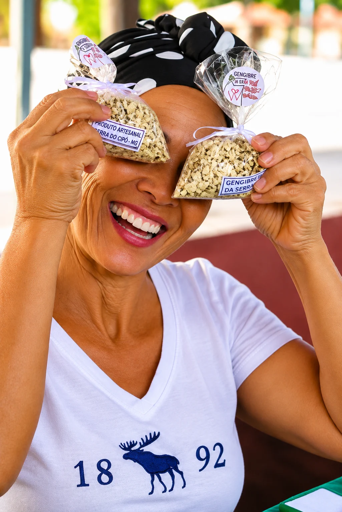
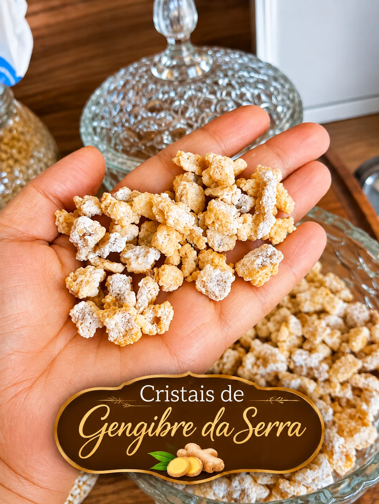
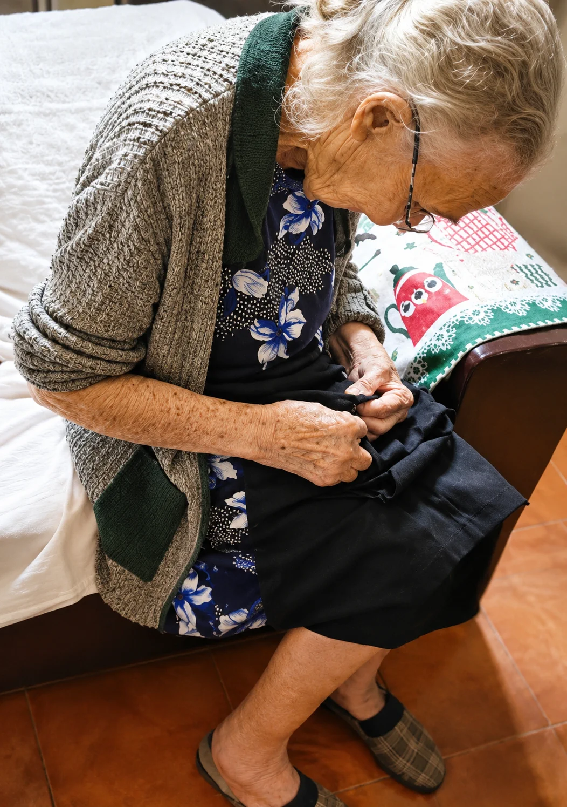
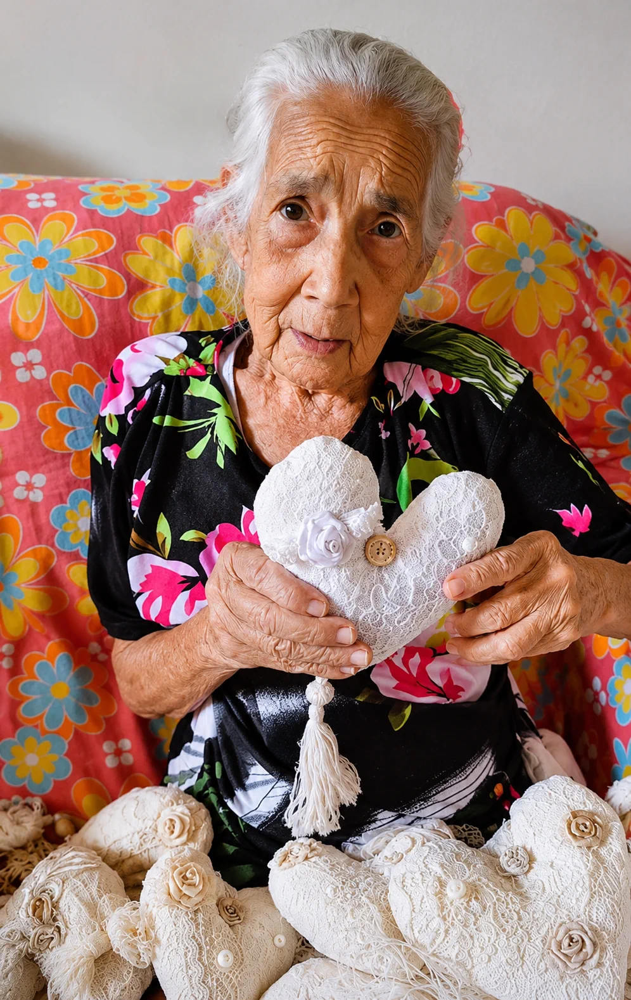
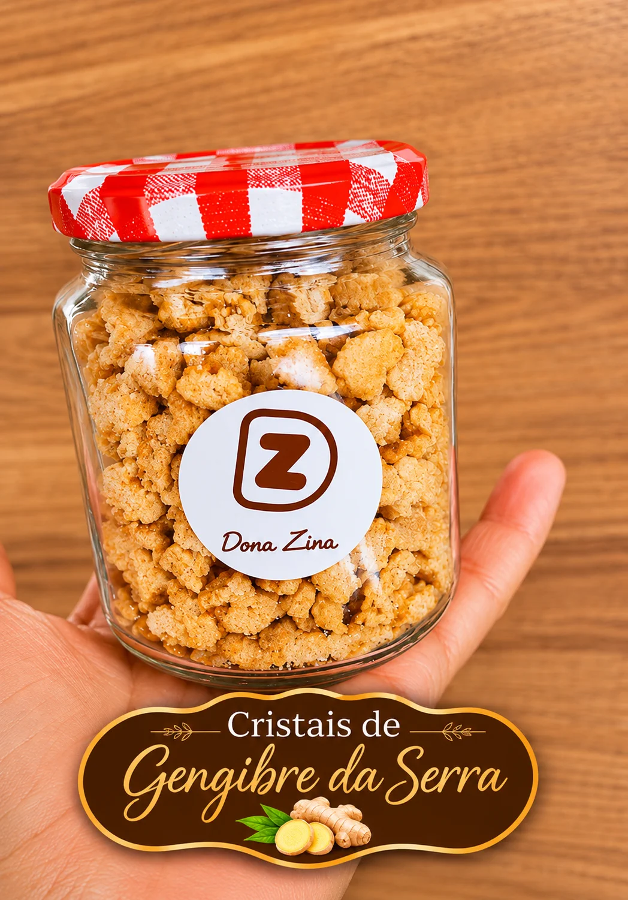

Tradição na Singer
Tradição na Singer
Colchas de Retalho Artesanais
Costura reforçada na máquina Singer com babado farto.
No galpão da Dona Zina na Serra do Cipó, você encontra o legítimo sabor e acolhimento mineiro: biscoitos caseiros quentinhos, geleias artesanais e doces da roça preparados com produtos orgânicos colhidos no nosso quintal — ao lado de bolsas artesanais forradas à mão, colchas na Singer e louças de mesa posta.


Tradição na Singer
Costura reforçada na máquina Singer com babado farto.

Doce do QuintalPlantado no quintal e cristalizado no tacho no Cipó.


Uma mulher à frente de seu tempo, serva de Deus, sábia e visionária, guiada por princípios, valores e uma sensibilidade única. Uma mulher que deixou sua marca na terra e construiu um legado que atravessa gerações.
Foi por meio de sua sabedoria, de seus ensinamentos e de sua maneira especial de enxergar a vida que nasceu a essência do que somos hoje.
"Acreditamos que a decoração não precisa seguir regras, porque, para nós, design é alma, identidade e sentimento. É transformar ambientes em lares, peças em memórias e detalhes em histórias."
É assim que criamos nossas peças artesanais: com propósito, cuidado e personalidade, para que cada cantinho da sua casa tenha aconchego e revele um pouco de quem você é.
Não somos apenas um espaço de vendas de artigos de decoração. Somos um lugar onde histórias se encontram, onde a identidade ganha forma e onde cada peça carrega significado e valor.
Mais do que decorar espaços, queremos fazer parte das histórias que acontecem dentro deles.
Venha nos conhecer e viver essa experiência!
Serra do Cipó – MG, o Jardim do Brasil.
Veja algumas das categorias mais queridas e entre no catálogo completo para explorar todas as peças.
 Sabores da roça
Sabores da roça
Receitas afetivas, ingredientes do quintal e aquele sabor de casa de vó.
 Mesa posta & café
Mesa posta & café
Canecas, pratos, jarras e conjuntos para transformar encontros em memórias.
 Feitas à mão
Feitas à mão
Peças autorais, coloridas e cuidadosamente acabadas por dentro e por fora.
 Garimpo afetivo
Garimpo afetivo
Peças com personalidade para levar o aconchego da Serra para dentro de casa.
Duas paixões de quem visita a Dona Zina e que enviamos toda semana para clientes de todo o Brasil:

Em cada quadradinho de tecido, uma lembrança. Nossas colchas de retalho têm babado farto e costura reforçada, mantendo viva a tradição das avós mineiras. Consulte as cores disponíveis em tamanho solteiro, casal, queen ou sob encomenda.

Você sabia que esses pequenos cristais começam na terra do nosso quintal? O gengibre é plantado e cultivado aqui mesmo na Serra do Cipó e preparado artesanalmente no tacho. Crocante, digestivo, antioxidante e cheio do sabor da roça.
Uma pequena amostra do que espera por você na Serra do Cipó.
A vida começa depois do café passado na hora, numa mesa posta com carinho, cercada de histórias que lembram o abraço quentinho da casa de vó.
Veja o catálogo completo, monte sua lista e calcule o frete para qualquer lugar do Brasil.
Nosso galpão fica bem no coração da Serra do Cipó. É o passeio perfeito depois da cachoeira para tirar fotos na nossa janela florida e escolher lembranças autênticas de Minas.
Rua Flor de Maio, nº 59 — Centrinho da Serra do Cipó (Santana do Riacho/MG).
Referência fácil: rua que desce bem de frente ao Supermercados BH.
Aberto de quinta a domingo e em todos os feriados.
Feriados e visitas em grupo: consulte horários atualizados pelo WhatsApp.


"Dica de ouro pra quem vem à Serra do Cipó! A Dona Zina é aquele cantinho imperdível no centrinho, cheio de louças lindas, presentes e o aconchego mineiro."
"Deus me deu mais do que pedi… só tenho a agradecer por viver aqui na Serra do Cipó. Obrigada @donazinacoisa_di_vo pelas belas decorações que alegram nossa casa!"
"Amei conhecer a loja Dona Zina! Que lugar encantador. Comprei várias coisas maravilhosas pra minha casa, pagando um valor excelente! Parada obrigatória toda vez agora."
"Dona Zina é uma loja que você se encanta à primeira vista; dá vontade de levar de tudo! Tem mesa posta, quadros decorativos e artesanato em confecção própria. Tudo em uma decoração única, que remete às coisas de vó — uma nostalgia que te leva lá na infância. Recomendo passar lá, nem que seja pra levar uma lembrancinha da Serra pra BH."